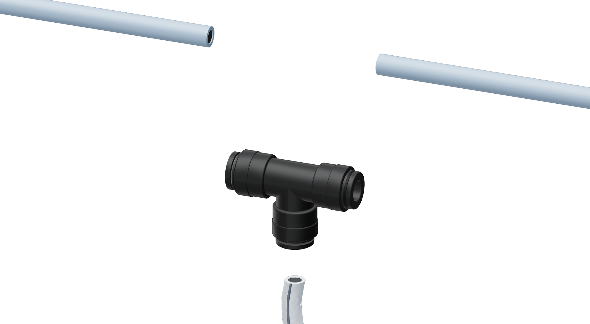
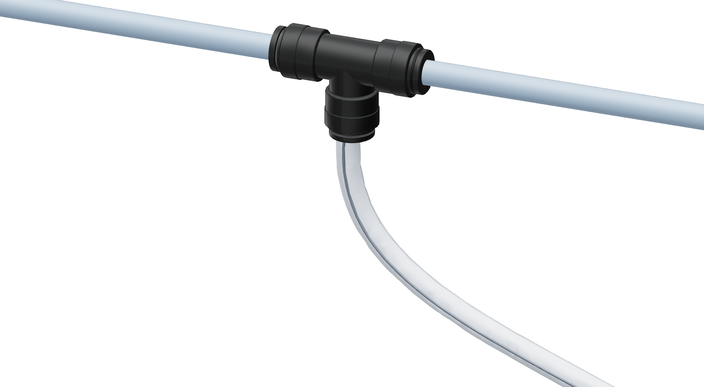

Add the water tee - 1/4-inch tube
4 / 5
Use only for an existing 1/4-inch plastic cold-water line. The white tube continues through the supplied filter.


4 / 5
Use only for an existing 1/4-inch plastic cold-water line. The white tube continues through the supplied filter.

